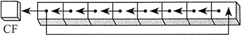

首页 > 编程笔记
汇编语言ROL（循环左移）指令：将操作数所有位都向左移
以循环方式来移位即为位元循环（Bitwise Rotation）。一些操作中，从数的一端移出的位立即复制到该数的另一端。还有一种类型则是把进位标志位当作移动位的中间点。
ROL（循环左移）指令把所有位都向左移。最高位复制到进位标志位和最低位。该指令格式与 SHL 指令相同：
位循环不会丢弃位。从数的一端循环出去的位会出现在该数的另一端。在下例中，请注意最高位是如何复制到进位标志位和位 0 的：
ROL（循环左移）指令把所有位都向左移。最高位复制到进位标志位和最低位。该指令格式与 SHL 指令相同：

位循环不会丢弃位。从数的一端循环出去的位会出现在该数的另一端。在下例中，请注意最高位是如何复制到进位标志位和位 0 的：
mov al,40h ; AL = 01000000b
rol al,1 ; AL = 10000000b, CF = 0
rol al,1 ; AL = 00000001b, CF = 1
rol alz1 ; AL = 00000010b, CF = 0
循环多次
当循环计数值大于 1 时，进位标志位保存的是最后循环移出 MSB 的位：
mov al,00100000b
rol al,3 ; CF = 1, AL = 00000001b
位组交换
利用 ROL 可以交换一个字节的高四位（位 4〜7）和低四位（位 0〜3）。例如，26h 向任何方向循环移动 4 位就变为 62h：
mov al, 26h
rol al, 4 ; AL = 62h
mov ax, 6A4Bh
rol ax, 4 ; AX = A4B6h
rol ax, 4 ; AX = 4B6Ah
rol ax, 4 ; AX = B6A4h
rol ax, 4 ; AX = 6A4Bh
关注公众号「站长严长生」，在手机上阅读所有教程，随时随地都能学习。内含一款搜索神器，免费下载全网书籍和视频。

微信扫码关注公众号